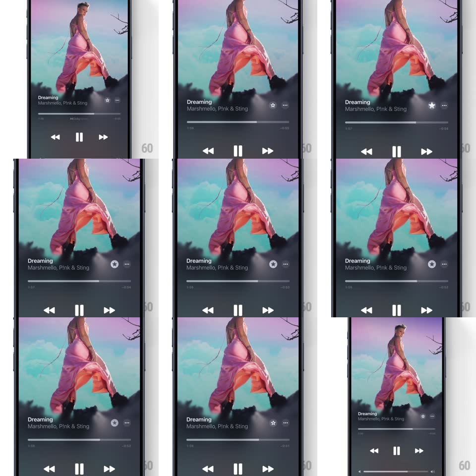

Media
Frame-by-frame

Rebuild this interaction 1:1: Apple Music's favorite micro-interaction on Now Playing - tapping the hollow star beside the title pops it into a filled white star with a springy overshoot and a tiny burst of star particles.

Rebuild this interaction 1:1: Apple Music's favorite micro-interaction on Now Playing - tapping the hollow star beside the title pops it into a filled white star with a springy overshoot and a tiny burst of star particles. ## Integration Integration: stack-agnostic spec - springs given as stiffness/damping, timed motions as duration + curve; map every value to your framework and animation library of choice. ## Scene Dark Now Playing screen: full-bleed artwork, song title and artists, a row beside the title with the favorite star and a "..." menu, scrubber, and transport controls below. ## Motion spec Pattern: springy star fill with particle burst. - Tap: the hollow star scales down to 0.8 (80ms, press feel), then springs to filled at scale 1.25 -> 1 (spring ~450/16, visible overshoot) while its fill wipes in center-out. - At the overshoot peak, 5-7 tiny star/spark particles eject radially (~40px travel, 450ms, ease-out, fading to 0) with slight rotation each. - The star settles into its filled resting state with a soft glow that decays over 600ms. - Un-favoriting reverses quietly: fill fades, scale dips 0.9 -> 1, no particles. ## Calibration - The whole celebration is under 700ms - a wink, not a fanfare. - Particles inherit the artwork's accent tones (white/pink here), never confetti-random. ## Reduced motion Star crossfades to filled; no particles or overshoot. ## Don't miss - The press-down dip BEFORE the pop is what makes it tactile - skip it and the spring reads as janky. - The star sits inline with the title row, small - the animation must read at 22px.